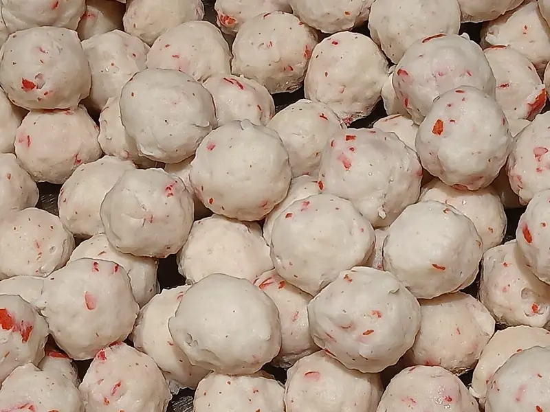

Фото: Fumikas Sagisavas, CC0

Рыбные тефтели в сметане
Тефтели из минтая с рисом, тушёные в сметанном соусе
55 мин4 порц.273 ккал на порциюБ 24 · Ж 13 · У 15Русская кухня
Продукты на 4 порц.
- Минтай500 г
- Рис2,5 ст. л.
- Лук репчатый1 шт
- Морковь1 шт
- Яйцо куриное1 шт
- Сметана 20%8 ст. л.
- Вода450 мл
- Соль1 ч. л.
- Укроп по желаниюпо вкусу
Как готовить
- Отварите рис в 250 мл воды 12 минут до полуготовности и остудите.
- Филе минтая проверьте на кости и пропустите через мясорубку вместе с половиной лука.
- Смешайте фарш, рис, яйцо и половину соли. Мокрыми руками скатайте тефтели размером с грецкий орех.
- Оставшийся лук мелко нарежьте, морковь натрите на тёрке и выложите на дно сотейника. Сверху уложите тефтели.
- Смешайте сметану с 200 мл горячей воды и оставшейся солью, залейте тефтели.
- Доведите до кипения и тушите под крышкой на слабом огне 25 минут. Посыпьте укропом перед подачей.
Совет. Чтобы сметана не свернулась, разводите её тёплой водой и не давайте соусу бурно кипеть. Подходит любая белая рыба: хек, треска.